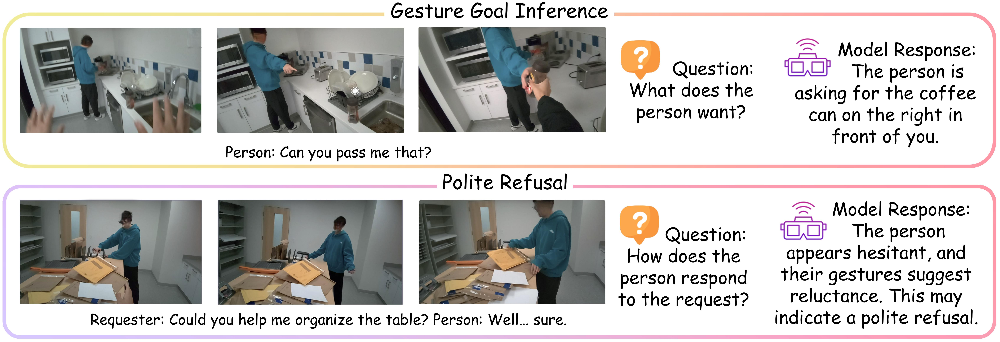
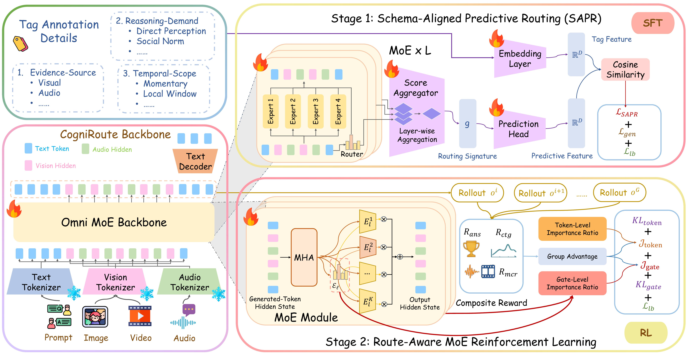
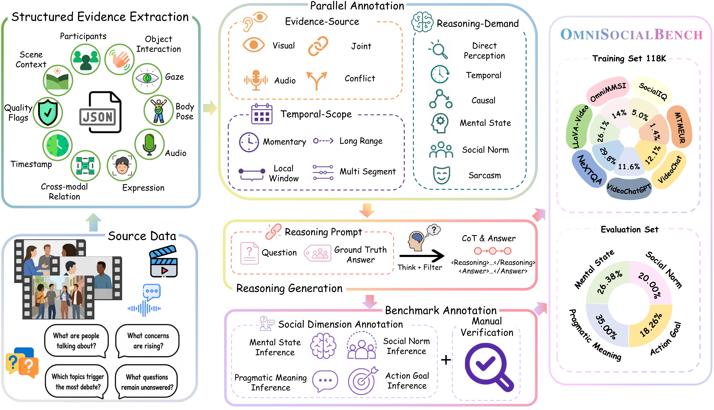
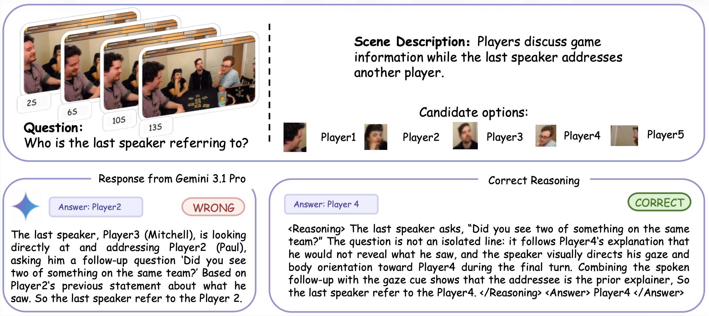

- CogniRoute aligns expert routing with the evidence needed for social reasoning. We introduce a schema-guided Mixture-of-Experts framework for social video question answering. Schema-Aligned Predictive Routing (SAPR) aligns modality-pooled, layer-wise routing signatures with a training-only cognitive schema that describes evidence source, reasoning demand, and temporal scope. This connects expert allocation to the visual, audio, joint, or conflicting evidence required by each question.
- Route-Aware MoE Reinforcement Learning jointly optimizes answers and expert allocation. RMRL supplies rollout-level rewards for answer correctness, modality-consistent reasoning, and cognitive temporal grounding. These complementary signals update both token generation and expert routing, encouraging correct answers whose reasoning uses the relevant modality and annotated temporal evidence.
- OmniSocialBench supports diagnostic social omni reasoning. We construct a resource with 118K structured training examples, grounded reasoning traces, cognitive schema labels, and temporal evidence spans. Its manually verified evaluation split covers mental state inference, pragmatic meaning, action goals, and social norms, with checks for answer validity, evidence consistency, reasoning support, and temporal grounding.
- Experiments show gains in cross-modal and temporally grounded social inference. CogniRoute achieves 59.38% average accuracy on OmniSocialBench, exceeding the strongest proprietary baseline by 15.33 points and the strongest open-source omni baseline by 26.77 points. The largest gains occur on questions requiring audio-visual coordination, conflict resolution, and temporally grounded social inference.
CogniRouteLearning to Route Social Evidence in Omni-Modal Models
TL;DR
We introduce CogniRoute, a framework that teaches omni-modal models to select the evidence each social question needs. CogniRoute guides expert routing toward relevant visual cues, audio cues, and moments in a video, improving reasoning about gestures, intent, and conversational context.

Evidence selection for social reasoning
CogniRoute combines speech, gestures, and visual context to infer requests and recognize social cues such as polite refusal.
Abstract
Omni-modal models can ingest video, audio, and text, but unified access to multiple modalities does not guarantee that a model uses the right evidence. This gap is especially pronounced in social video question answering, where the answer may hinge on a gesture, vocal tone, temporal cue, or mismatch between what is said and what is visually expressed.
We introduce CogniRoute, a schema-guided Mixture-of-Experts framework for social omni reasoning. CogniRoute uses a training-only cognitive schema that factorizes each example by cross-modal relation, reasoning demand, and temporal scope, and aligns global routing signatures with this structure during supervised fine-tuning. We further introduce Route-Aware MoE Reinforcement Learning, which jointly optimizes token generation and expert allocation using rewards for answer correctness, modality-consistent reasoning, and cognitive temporal grounding. To support training and evaluation, we construct OmniSocialBench, a diagnostic social video QA resource with 118K structured training examples, grounded reasoning traces, schema labels, temporal evidence spans, and a manually verified evaluation split. CogniRoute achieves 59.38% average accuracy on OmniSocialBench, improving over the strongest proprietary baseline by 15.33 points and the strongest open-source omni baseline by 26.77 points, with the largest gains on questions requiring audio-visual coordination, conflict resolution, and temporally grounded social inference.
Contributions
CogniRoute Method
A social question may depend on a gesture, a tone of voice, or an earlier turn in a conversation. CogniRoute trains the model’s router to reflect this evidence structure, so that expert selection supports the reasoning the question requires. Its cognitive schema describes each training example along three complementary axes.
What the schema captures
-
Evidence source
Identifies whether an answer needs visual cues, audio cues, both together, or conflicting signals, such as reassuring words paired with a hesitant expression.
- Visual
- Audio
- Joint
- Conflict
-
Reasoning demand
Specifies whether the model must observe a cue, track changes, infer causes or mental states, or interpret social conventions and sarcasm.
- Direct Perception
- Temporal
- Causal
- Mental State
- Social Norm
- Sarcasm
-
Temporal scope
Identifies the relevant span of a video, from a single moment to several separated segments, including earlier turns in a conversation.
- Momentary
- Local Window
- Long Range
- Multi Segment

Schema-Aligned Predictive Routing (SAPR)
During supervised fine-tuning, CogniRoute summarizes modality-specific routing patterns across the MoE layers into a global routing signature. Alongside learning to answer the question, it learns to align this signature with the example’s schema. This encourages expert allocation to reflect the required evidence source, reasoning demand, and temporal scope.
The schema is used only during training. At inference time, the model receives the video, audio, and question; no schema labels are required.
Route-Aware MoE Reinforcement Learning (RMRL)
RMRL jointly refines answers and expert routing using rewards for answer correctness, modality-consistent reasoning, and temporal grounding. The feedback trains both generated tokens and expert choices to produce answers supported by the relevant evidence.
OmniSocialBench Dataset
OmniSocialBench pairs social video questions with evidence-grounded reasoning, cognitive schema labels, and temporal evidence spans.
118KStructured training examples
Manually verifiedEvaluation split

-
Mental state
Emotions, beliefs, and intent.
-
Pragmatic meaning
Indirect speech, implicature, and sarcasm.
-
Action goal
The purpose behind an observed action.
-
Social norm
Conventions, expectations, and social rules.
Annotation and verification details
Training examples come from social and egocentric video corpora, including SocialIQ, SocialMM, LLaVA-Video, NeXT-QA, VideoChatGPT, MTM, and Charades. Extracted cues include participants, scene context, gaze, expression, body pose, gestures, object interactions, speech, speaker changes, laughter, silence, and acoustic events.
Every evaluation example is manually checked for answer validity, evidence consistency, schema correctness, reasoning support, temporal grounding, and social-dimension assignment.
Quantitative Results
OmniSocialBench social reasoning
Social understanding results on OmniSocialBench across four social inference categories. CogniRoute achieves the best result in every category, surpassing Gemini 3.1 Pro by 15.33 points on average.
| Model | Social Norm↑ | Action Goal↑ | Mental State↑ | Pragmatic Meaning↑ | Avg↑ |
|---|---|---|---|---|---|
| GPT 5.4 | 14.37 | 20.13 | 18.96 | 18.57 | 18.12 |
| Qwen 3.6 Plus | 15.00 | 26.17 | 14.69 | 19.29 | 18.50 |
| GLM 5V Turbo | 14.37 | 18.12 | 13.27 | 17.50 | 15.88 |
| Baichuan-Omni-1.5 | 14.37 | 12.75 | 12.80 | 12.86 | 13.12 |
| OmniVinci | 18.75 | 20.81 | 26.07 | 21.07 | 21.88 |
| Qwen3 Omni | 26.11 | 33.02 | 38.97 | 31.44 | 32.61 |
| MiMo V2 Omni | 30.63 | 32.89 | 31.28 | 30.36 | 31.13 |
| Qwen 3.5 Omni | 31.25 | 30.87 | 36.02 | 28.57 | 31.50 |
| Gemini 3.1 Flash | 27.50 | 47.65 | 43.33 | 41.79 | 40.43 |
| Gemini 3.1 Pro | 33.33 | 36.84 | 60.00 | 43.90 | 44.05 |
| CogniRoute (Ours) | 58.13 | 66.44 | 60.18 | 55.71 | 59.38 |
Public audio-visual benchmarks
Audio-visual benchmark comparison between Qwen3-Omni-30B and CogniRoute across 10 public benchmarks spanning audio-visual, audio-only, and video-only understanding. CogniRoute improves on most audio-visual and video-only tasks, indicating that schema-guided routing strengthens cross-modal selection and integration.
| Model | AV-SpeakerBench↑ | OmniBench↑ | MMVU↑ | WorldSense↑ | Daily-Omni↑ |
|---|---|---|---|---|---|
| Qwen3 Omni 30B | 54.1 | 55.5 | 59.8 | 54.0 | 73.6 |
| CogniRoute (Ours) | 56.2 | 56.7 | 60.7 | 53.8 | 74.3 |
Additional video and audio benchmarks
Accuracy on AV-Odyssey, MVBench, MMAU, OmniVideoBench, and Video-MME-v2. Higher scores are better.
| Model | AV-Odyssey↑ | MVBench↑ | MMAU↑ | OmniVideoBench↑ | Video-MME-v2↑ |
|---|---|---|---|---|---|
| Qwen3 Omni 30B | 34.7 | 69.5 | 75.4 | 38.4 | 36.5 |
| CogniRoute (Ours) | 36.8 | 70.2 | 73.2 | 38.9 | 36.8 |
Ablations
Correct evidence structure and joint optimization both matter.
SAPR raises average accuracy from 40.13% to 50.13%; random or shuffled schema variants provide much smaller gains. Starting from that checkpoint, full RMRL raises accuracy to 59.38%, outperforming token-only or gate-only optimization. The best results come from giving training feedback to both the generated answer and the router’s expert choices.
Contribution of routing and learning components
Average accuracy (%)
Average accuracy (%)
Average accuracy (%)
- SAPR configurations
- Random and shuffled tags break the link between an example and its evidence structure. A shared projection uses the same mapping across MoE layers. Full SAPR uses the correct tags and separate projections for each layer.
- RMRL configurations
- All variants start from the same SAPR-trained checkpoint and use the same reward. Token + trainable router allows router updates without an explicit gate objective; Full RMRL assigns learning feedback to both generated tokens and expert choices.
Qualitative Results

Qualitative comparison between Gemini 3.1 Pro and CogniRoute on a manually verified case from OmniSocialBench. The clip shows several players discussing game information, with the last speaker addressing another player. Given the question "Who is the last speaker referring to?" with five candidate referents (Player1–Player5):
- Gemini 3.1 Pro (Player2 — incorrect): identifies a locally plausible cue and treats the final utterance "Did you see two of something on the same team?" as a follow-up to Player2's earlier statement. It maps the question to a short-range, single-utterance reference, missing the discourse context.
- CogniRoute (Player4 — correct): links the final question to Player4's prior explanation that he would not reveal what he saw, and combines this with the speaker's gaze and body orientation toward Player4 during the final turn. The cross-modal, discourse-level grounding identifies Player4 as the addressee.
BibTeX
@article{shen2025cogniroute,
title={CogniRoute: Learning to Route Social Evidence in Omni-Modal Models},
author={Shen, Yifan and Tian, Pei and Li, Xinzhuo and Fang, Bowen and Xia, Shujun and Li, Bingxuan and Jojic, Ana and Ye, Wenming and Cao, Xu and Rehg, James Matthew and Lourentzou, Ismini},
journal={arXiv preprint arXiv:2606.20970},
year={2026}
}